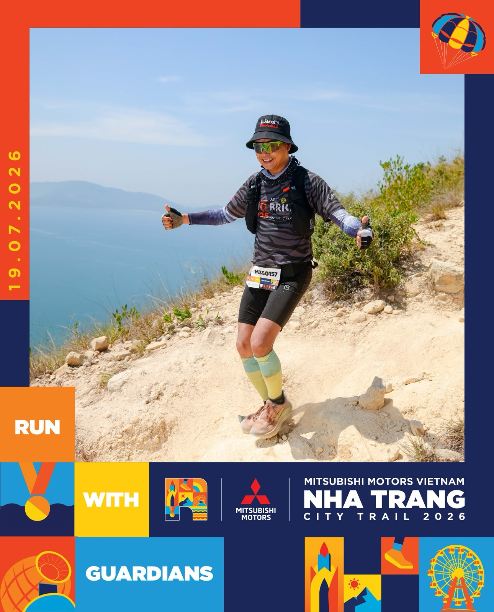

55 km Lâm Đồng Trail — và vì sao lịch sáng hôm sau của tôi không có buổi chạy nào
4 giờ 30 sáng Thứ Bảy 7/11, tôi xuất phát ở Lâm Đồng Trail cự ly 55 km. Gần 6 giờ chiều tôi về đích. Nhưng việc tôi làm cẩn thận nhất tuần đó không phải là chạy, mà là ngồi viết lịch cho những ngày không chạy.

Ảnh từ City Trail Nha Trang 19/7/2026, cự ly địa hình đầu tiên của tôi (35 km). Bốn tháng sau là 55 km.
Những con số của một ngày dài
Tôi ghi lại đúng như trang kết quả chính thức của ban tổ chức, không thêm bớt:
| Mục | Số liệu |
|---|---|
| Quãng đường | 55,7 km đường địa hình |
| Độ cao leo tích luỹ | +2.583 m |
| Giờ xuất phát · giới hạn về đích | 04:30 · 21:00 |
| Thời gian hoàn thành | 13 giờ 23 phút 22 giây |
| Hạng chung | #442 |
Tôi không chạy nhanh. Người về nhất nhanh hơn tôi hơn 8 tiếng. Tôi về trước giờ đóng đích hơn ba tiếng, và đó là tất cả những gì tôi đặt ra cho mình: về đích, còn nguyên vẹn, còn đủ sức cho mùa tập tiếp theo. Đây là cự ly địa hình dài nhất tôi từng chạy, sau 35 km hồi tháng 7.
Câu hỏi tôi tự đặt ra sau giải
Vài hôm sau, trong một buổi tự ghi âm cuối ngày, tôi nghe chính mình hỏi:
"Tại sao những việc khó như chạy marathon, thi Ironman, chinh phục cả 55 km leo núi mình còn làm được, mà kế hoạch hằng ngày mình lại không làm được?"
Tôi nghĩ câu trả lời không nằm ở ý chí. Một giải chạy có ngày giờ cố định, có vạch xuất phát, có giờ đóng đích, và có một lịch tập được viết ra từng buổi. Công việc hằng ngày thì thường chỉ có mục tiêu, còn lịch thì để trong đầu. Thứ giúp tôi về đích không phải là cố gắng hơn người, mà là đã viết ra trước mình sẽ làm gì vào ngày nào.
Và trong tờ lịch đó, phần tôi viết đầu tiên lại là những ngày nghỉ.
Vì sao viết lịch nghỉ trước lịch tập
Mục tiêu tiếp theo của tôi là cự ly Ironman đầy đủ ở Đà Nẵng ngày 9/5/2027: bơi 3,8 km, đạp 180 km, chạy 42,2 km trong một ngày. Tôi đếm ngược 180 ngày, và ngày 1 là 11/11, tức bốn ngày sau Lâm Đồng Trail.
Tuần đầu tiên của 180 ngày ấy không có buổi chạy nào cho tới Chủ nhật 15/11, tròn tám ngày sau giải. Chỉ có bơi nhẹ, đạp nhẹ, giãn cơ. Lý do rất đơn giản:
- Sau 55 km đường núi, cơ và gân cần thời gian hơn tim phổi. Người thấy mình "khoẻ lại rồi" sau hai ngày thường là tim phổi đã hồi, còn chân thì chưa. Chạy lại sớm vào lúc đó là cách nhanh nhất để chấn thương.
- Nếu ngày nghỉ là ô trống, tôi sẽ lấp nó bằng việc khác, hoặc tệ hơn, bằng một buổi "chạy nhẹ thôi" rồi thành chạy dài. Tôi biết mình, tôi có tiền sử tập dồn và thiếu ngủ.
- Phục hồi cũng là một buổi tập. Nên nó phải có tên, có giờ, có việc cụ thể trên lịch, giống hệt một buổi đạp xe 2 tiếng.
Một ngày phục hồi của tôi trông như thế nào
Không phải nằm cả ngày. Trên lịch, ngày phục hồi của tôi được ghi rõ từng việc nhỏ:
- Đi bộ hoặc ngâm biển, bơi thả lỏng khoảng 20 phút. Vận động nhẹ để máu lưu thông, không phải để "tập".
- Giãn cơ, lăn foam khoảng 15 phút cho bắp chân, đùi, hông.
- Đo nhịp tim lúc nghỉ và chỉ số biến thiên nhịp tim trên đồng hồ, cân, rồi ghi vào sổ. Con số ghi đều mỗi sáng sẽ cho tôi biết cơ thể đã sẵn sàng hay chưa, thay vì đoán theo cảm giác.
- Ngủ trước 22 giờ. Đây là phần khó nhất với tôi, và cũng là phần quan trọng nhất.
Một điều tôi học được từ chính tuần này: lịch rồi cũng sẽ lệch. Sáng 10/11 Nha Trang mưa tầm tã, tôi không ra đường được và ngủ quá giờ. Chiều hôm đó tôi tập bù. Hôm sau lịch là bơi mà trời vẫn mưa, thì đổi sang môn khác. Lỡ thì bù, không làm được môn này thì đổi môn, nhưng không bỏ ngày. Mùa mưa Nha Trang còn kéo dài, nên tôi đang chuẩn bị sẵn một bài tập trong nhà 30–45 phút làm "phương án mưa", đỡ phải quyết lại mỗi sáng.
Điều tôi mang từ đường chạy về công việc
Tôi không nghĩ ai cũng cần chạy 55 km. Nhưng tôi nghĩ ai cũng đang có một "cự ly dài" của riêng mình: một dự án, một khoản nợ cần trả, một thói quen muốn xây. Và cách tôi đi hết một cự ly dài, cho tới giờ, vẫn là ba việc:
- Viết ra ngày nghỉ trước, để biết mình được phép dừng ở đâu.
- Viết ra buổi tập cụ thể theo từng ngày, không viết mục tiêu chung chung.
- Khi lịch lệch thì bù hoặc đổi, đừng bỏ, và đừng tự trách quá lâu.
Tôi đang thử đem đúng cách này sang lịch làm việc hằng ngày. Còn 180 ngày nữa mới tới vạch xuất phát ở Đà Nẵng. Tôi sẽ kể tiếp khi có điều đáng kể.
Bài viết là trải nghiệm cá nhân của một người chạy phong trào, không phải lời khuyên y khoa hay giáo án huấn luyện. Mỗi người có thể trạng khác nhau; nếu anh/chị chuẩn bị cho một cự ly dài, nên hỏi ý kiến huấn luyện viên hoặc bác sĩ thể thao. Số liệu giải lấy từ trang kết quả chính thức của ban tổ chức (giải ngày 7/11/2026).
"Rồi, ngày mới tốt lành nhé."
Sống tử tế · Kiếm tiền hạnh phúc · Cho đi giá trị
Anh/chị cũng đang tập cho một cự ly dài?
Chạy trail, marathon hay ba môn phối hợp, hoặc chỉ muốn trò chuyện về nhà đất Nha Trang và cuộc sống, cứ nhắn cho tôi một câu. Tôi trả lời bằng chính số này.
Nhắn Zalo — 0869 668 638